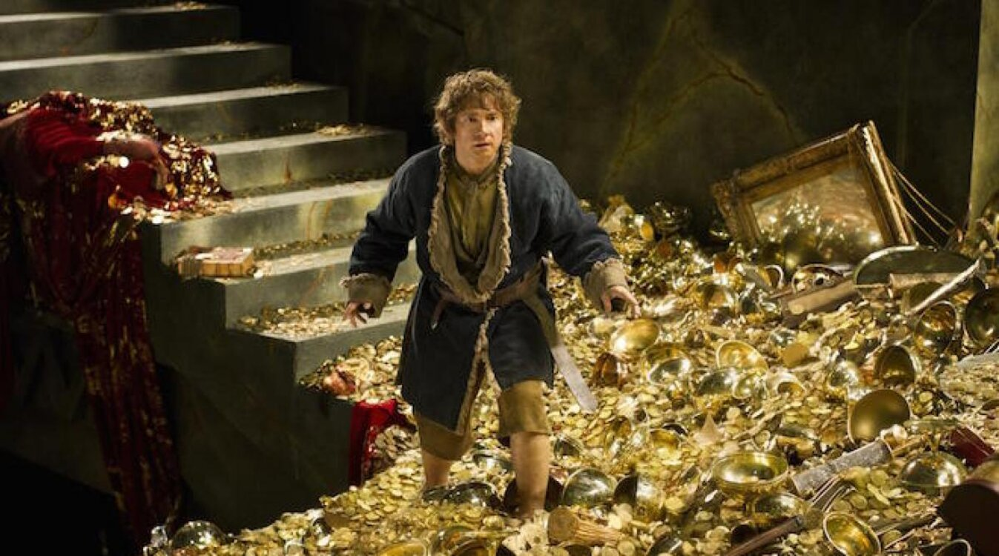

Los 'tesoros' de 'El señor de los anillos' salen a subasta.
Un coleccionista privado sacará a subasta a Dardo —la espada de Frodo—, artículos de magia de Gandalf y pies hobbits, entre otros objetos de la saga.
La casa de subastas dijo que los raros artículos, auténticos tesoros para los fans, procedían de la colección privada de un coleccionista, y que es la segunda mayor colección de recuerdos de las películas de El señor de los anillos, sólo por detrás del propio archivo oficial de Jackson. "Ha pasado más de una década desde que se estrenó la primera de las películas de la trilogía y en ese tiempo sólo un puñado de artículos de esos filmes se han puesto públicamente a la venta", dijo Martin Nolan, director ejecutivo de Juliens Auctions, en un comunicado.
Se espera que el total de la subasta alcance entre 1 y 1,5 millones de dólares (entre 736.000 y 1,1 millón de euros) de la venta de 80 lotes de recuerdos. Otros artículos destacados del reino fantástico de la Tierra Media incluyen la espada de Frodo Bolsón, interpretado por Elijah Wood (con un precio estimado de entre 100.000 y 200.000 dólares), uno de los objetos más cotizados.
Se espera obtener entre 50.000 y 70.000 dólares por la espada de Aragorn (interpretado por Viggo Mortensen), el hacha de Gimli y artículos de magia de Gandalf (Ian McKellen). La trilogía de películas de Jackson de El señor de los anillos, formada por La comunidad del anillo (2001), Las dos torres (2002) y El retorno del rey (2003), llevaron a la gran pantalla las novelas de fantasía de J. R. R. Tolkein con el mismo nombre. Las películas recaudaron casi 4.000 millones de dólares (2.948 millones de euros) en la taquilla mundial, una de las mayores series cinematográficas de la historia.